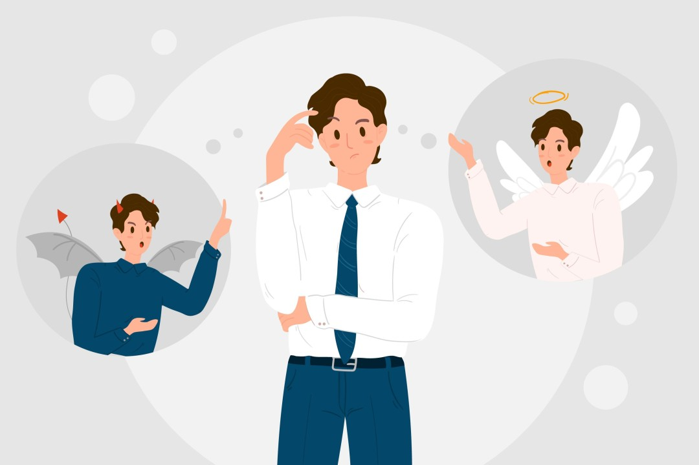

La ética: ¿Cómo se forja y qué significa este término?
La conducta ética se origina desde la existencia de uno de los elementos que permite el desarrollo moral y la aplicación de la conducta ética durante la infancia es la “socialización”, la cual se refiere a la asimilación y desarrollo de costumbres, hábitos, valores, intenciones y motivos que permite a largo plazo en convertirnos seres partícipes y productivos de la sociedad.
Por lo general, de manera implícita, los padres de familia tienen ideas básicas acerca del tipo de hijo que desean formar, esto lo hacen mediante los “estándares sociales” que tienen estipulado. En esencia, se ha argumentado que los niños que logran ser socializados de manera efectiva no tienden a esperar órdenes o a estipular las reglas para obtener gratificaciones o evitar castigos, porque han logrado desarrollar sus propios estándares sociales. Para hacer esto, los padres deben estimular desde un inicio la “autorregulación”.
Por consiguiente, la autorregulación es uno de los pilares fundamentales de la socialización. A medida que los infantes asimilan la información de las reglas, las sugerencias, los regaños van desarrollando la capacidad de satisfacer a sus padres. Este proceso de asimilación de reglas y estándares de conducta, se denomina “internalización”, las cual se refiere al proceso de otorgarle un significado adaptativo a estos patrones para guiar el comportamiento del sujeto frente a los ojos de la sociedad.
Al ver que sus padres se alegran por su comportamiento apropiado, los lactantes tienden a seguir ejecutando comportamientos éticos para ajustarse lo más pronto posible a los estándares estipulados. Pero, más allá de agradar a los padres, los niños van desarrollando los “estándares morales”, los cuales ayudan a configurar la “conciencia” con respecto a lo bueno y lo malo.
En un comienzo, esta conciencia se va desarrollando en concordancia con la “obediencia comprometida”, es decir, cuando aplican los comportamientos apropiados, pero teniendo como base los valores internalizados por los padres.
Cuando los niños no logran internalizar dichos valores y sus padres están ausentes, tienden a desarrollar otro tipo de obediencia que los desvía moralmente, muchas veces denominado como la “obediencia situacional”, es decir, aquella conciencia que se desarticula de los valores, las normas y las costumbres estipuladas, siempre y cuando, no se encuentre la autoridad, en este caso, los padres.
Por ello, ser ético es actuar racionalmente y no en función de condicionantes externos por evitar castigos. La razón en sí es algo que se debe emplear todas las veces posibles para forjar el carácter. Un buen carácter es uno de los objetivos existenciales que posee el ser humano, se refiere a la habilidad del individuo para diseñar estilos, hábitos y costumbres de vida que le permitan estimular el acto de obrar, de forma positiva y cálida. Es decir, es un proceso de “auto-educación”, que consiste hallar todos los mecanismos posibles para obrar bien, pero teniendo en cuenta, nuestras verdaderas razones para manifestarse y actuar.
En consecuencia, la ética no es algo que solo se centra en querer beneficiar a los demás procurando su bien, sino además enfatizando el bien de uno mismo, teniendo como base las decisiones autónomas que toma el sujeto para su obrar. Al final, actuar bien o mal es una elección personal, pero lo que aconseja la ética es que seamos responsables de las consecuencias, pues su negación lo único que genera es someternos a los engaños y mentiras hacia uno mismo.
En conclusión, la ética se puede comprender como la capacidad del sujeto para forjar su carácter, en función del uso de la razón, teniendo como base si lo que considera hacer beneficia al otro y a sí mismo.
Elementos de la ética.
- Conocimiento.
- La libertad.
- La voluntad.
- El deber.
- Los valores.
